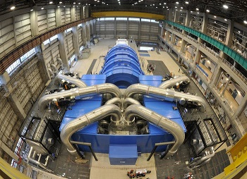

Turbina de vapor

El vapor a presión que sale de la parte alta del generador de vapor se envía a la turbina. En ésta empuja sus paletas para hacerla girar. En esta imagen se puede ver el conjunto de la turbina con los tubos de llegada del vapor.